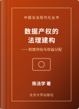

学术研讨与公共交流
围绕人工智能治理、数据法与平台规制等议题，持续参与学术会议、政策研讨与跨学科交流。
这一版减少“模板味”，把中文标题换成更稳的宋体体系，同时配少量真实图片点缀。
陈法学，法学博士，现任法学院教授、博士生导师，兼任数字法治研究院执行院长。北京大学法学院法学学士、法学博士，牛津大学法律系博士后研究员，曾任剑桥大学劳特派特法学研究中心访问学者。
研究工作围绕数字社会中的制度变迁展开，重点讨论人工智能与算法决策、数据要素流通与个人信息保护、平台权力与网络治理等议题。在《中国法学》《法学研究》《中外法学》及国际法与技术期刊发表系列成果，并持续参与数字治理相关立法与政策咨询。
在研究方法上，注重规范分析与技术机制之间的衔接，尝试把算法、数据与平台的运行逻辑纳入法学概念体系，在制度可实施性与基本权利保障之间寻找更稳定的解释框架。
“技术问题进入法律之后，真正需要解释的，不只是新的工具，而是权力、责任与权利关系究竟发生了怎样的变化。”Research statement · 数字法治研究方法
把原来容易显得散乱的装饰图收束为两个明确的视觉模块：一张强调学术交流，一张强调法学空间感。
围绕人工智能治理、数据法与平台规制等议题，持续参与学术会议、政策研讨与跨学科交流。
保留真实建筑图片作为辅助视觉，而不再做成大面积背景装饰，从而更协调、更克制。
系统讨论数字技术进入法律体系后的基本概念、制度结构与研究方法，重点回应算法、数据与数字权利等基础问题。

围绕数据要素的产权配置、使用秩序与流通机制展开，讨论传统所有权范式在数据资源治理中的边界。
继续保留接近期刊目录的排版，但整体字感更柔和、中文更自然。
围绕算法透明度、风险评估、全生命周期监管与技术治理工具展开跨学科研究。
研究数据要素产权配置与竞争秩序，并形成系列论文、专著与政策建议。
讨论平台场景下个人信息处理、权利救济与监管责任的制度衔接。
参与网络与信息法、人工智能治理及数字法治相关研究组织、期刊与学术共同体建设。
围绕人工智能、数据治理、平台规制等议题参与有关部门立法论证、政策研讨与专家咨询。
持续开展数字治理比较法研究，并与境外高校、研究机构和学者开展学术访问与合作交流。
欢迎围绕人工智能治理、数据法、网络与平台治理及数字法治研究开展学术交流与合作。正式联系建议直接通过邮箱发送事项概要与相关材料，以便后续沟通。